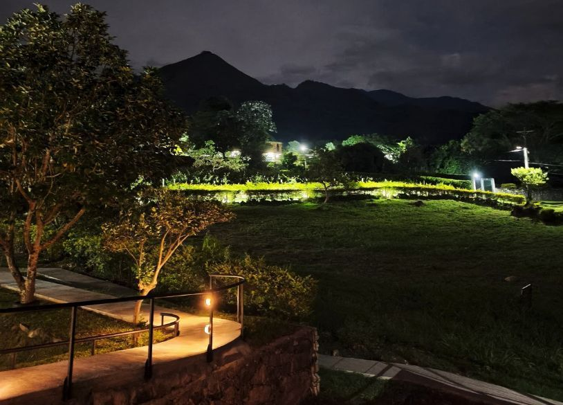

Destinos imperdibles para visitar en Huila, Colombia
Descubre un recorrido por las maravillas del departamento del Huila, desde el Desierto de la Tatacoa hasta el Parque Arqueológico de San Agustín.
Leer más